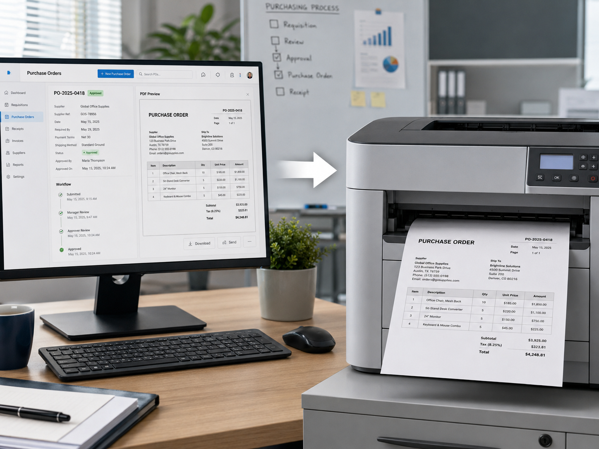

Desarrollo de software, IA y automatización para empresas en México.
Creamos software a la medida, automatizaciones con IA e integraciones para eliminar trabajo manual, errores y falta de control operativo.
Cuando el proceso se atora, normalmente falta software.
Cuéntanos cómo trabajan hoy. Diseñamos el flujo, la automatización o la IA que lo hace más simple.
“Lo copiamos de un sistema a otro.”
Software → Integramos datos y eliminamos doble captura.
“Para saber cómo va, hay que preguntar.”
Software → Estados, responsables y pendientes en vivo.
“Todo vive en archivos y mensajes.”
Software → Un flujo central con reglas e historial.
“Alguien revisa PDFs uno por uno.”
IA → Captura, clasificación y validación automática.
“Las autorizaciones se quedan atoradas.”
Software → Rutas, avisos y escalaciones automáticas.
“Cada semana armamos el mismo reporte.”
IA + software → Consolidamos datos y generamos salidas.
Una operación eficiente también es una operación que puedes entender.
A veces el mayor problema no es cuánto tarda una tarea. Es no saber qué pasó, qué sigue, quién es responsable o dónde está la información correcta.
Desde una mejora puntual hasta un sistema completo.
No importa el tamaño del problema. Elegimos la intervención adecuada: automatizar, conectar o construir.
Qué cambia cuando el proceso corre en software.
Menos fricción diaria. Más visibilidad para decidir.
Tiempo
Menos pasos y espera.
Costos
Menos retrabajo.
Control
Reglas claras.
Visibilidad
Estados en vivo.
Trazabilidad
Historial completo.
Una orden de compra puede ser mucho más que un PDF.
Si hoy se genera manualmente, el problema quizá no sea el tiempo de crearla. Puede ser no saber qué se pidió, quién autorizó, qué versión es correcta o si ya fue atendida.

Tarea repetitiva
Un paso manual que sucede todos los días.
Proceso de un área
Seguimiento, documentos, aprobaciones o control.
Proceso multiárea
Información y responsabilidades que cruzan varios equipos.
Primero entendemos. Después construimos.
El objetivo no es entregar software: es que el proceso funcione mejor después de implementarlo.
Entender
Cómo funciona hoy, dónde se pierde tiempo, control o información.
Priorizar
Qué cambio generaría más impacto sin construir de más.
Construir
La automatización, integración o sistema que realmente hace falta.
Medir
Comparar el antes y el después para comprobar la mejora.
La tecnología entra donde la operación hoy tiene fricción.
¿Hay algo en tu operación que sabes que debería funcionar mejor?
No importa si hoy se resuelve con Excel, correos, mensajes o una combinación de sistemas.